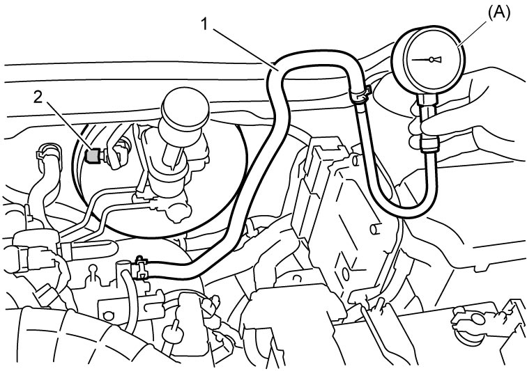

1D
| Vacuum Pump Inspection |
1)Warm up engine to normal operating temperature.
2)Stop engine after warming up.
3)Remove engine cover. 
4)Disconnect brake vacuum pump hose (1) from brake booster.
5)Connect special tool to brake vacuum pump hose.
6)Close brake booster using tape (2) or the like.


 "Expand image")
7)Pull off tape from brake booster.
8)Check negative pressure with engine idling. If negative pressure is not as specified, replace vacuum pump.
Negative pressure specification
More than –50 kPa (–0.5 kgf/cm2, –7.25 psi, –0.5 bar) within 7 seconds at idle speed
9)Disconnect special tool and connect brake vacuum pump hose to brake booster.